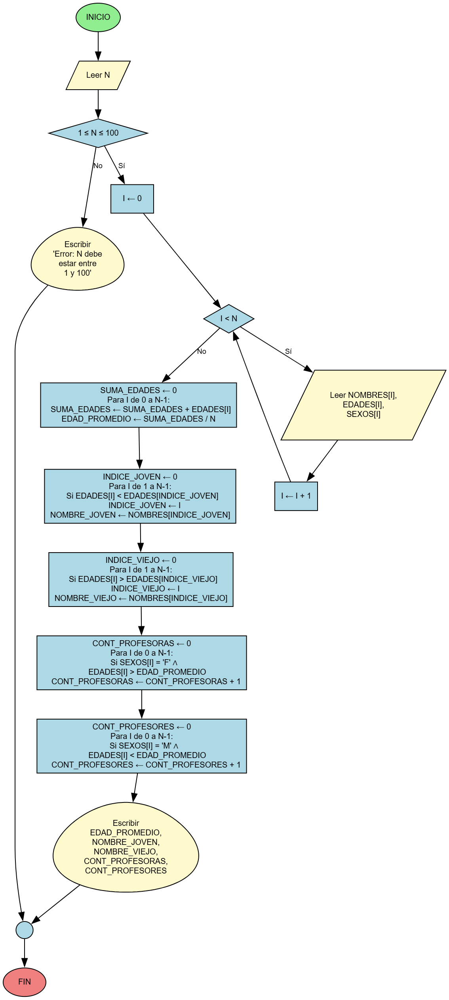

Aprenderás a descomponer problemas complejos en subprogramas reutilizables. Practicarás el diseño modular, el paso de parámetros, valores de retorno y la organización de código en funciones bien definidas.
Requisitos
- Identificar tareas repetitivas y crear funciones para ellas
- Implementar funciones con parámetros y valores de retorno apropiados
- Implementar procedimientos (void) para tareas sin retorno
- Usar convenciones de nombres descriptivos para funciones
- Documentar funciones con comentarios JavaDoc
- Llamar funciones desde main y otros métodos
Ejemplo de uso esperado
// Funciones modulares:
public static int sumar(int a, int b) {
return a + b;
}
public static void mostrarResultado(int res) {
System.out.println("Resultado: " + res);
}
// Uso:
int resultado = sumar(5, 3);
mostrarResultado(resultado);
Notas rápidas
Asegúrate de:
- Función: retorna un valor, Procedimiento: no retorna (void)
- Parámetros por valor: Java pasa copias de primitivos
- Usa nombres verbales para funciones:
calcular, obtener
- Tip: Mantén funciones pequeñas y con un solo propósito
📊 Diagrama de Flujo

Diagrama de flujo del algoritmo